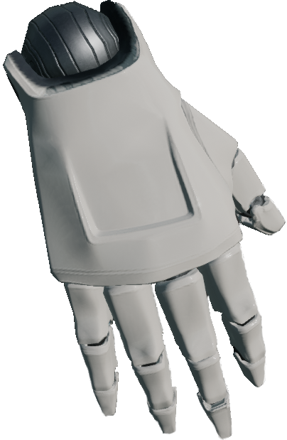

HandAgent
图片

描述
一个可以通过对关节施加扭矩来控制，并能在三维空间中移动的漂浮手部代理。
控制方案
- 原始关节力矩（Raw Joint Torques） (
0)
23 维的原始转矩向量，用于传入关节，顺序按下面 HandAgent 关节列出的顺序
- 缩放关节扭矩（Scaled Joint Torques） (
1)
23 长度的缩放扭矩向量，范围在 -1 到 1 之间。每个关节的手指力量根据骨骼的重量以及是否是手指来缩放。1 代表前向的最大力量
- 缩放关节扭矩 + 浮动 (
2)
和上面一样，但向量长度为 26，最后三个值表示[x, y, z]方向的移动量（见坐标系），最大自由度为 0.5 米。
最后几个坐标允许 HandAgent 四处漂浮。
HandAgent 关节
HandAgent 和 JointRotationSensor 的控制方案使用一个长度为 94 的向量来表示 48 个关节。
要深入了解这些关节，请参考下表。
注意： 请注意，此处给出的索引是关节的起始索引，有关每个关节在此索引之后有多少个值，请参阅章节标题。示例：hand_r 的起始索引为 0，其值包括 [swing1, swing2, twist]，因此向量中的索引 0 对应于 swing1，1 对应于 swing2，2 对应于 twist。
返回顺序如下：
| 手臂关节 | 每个动作都有 [swing1, swing2, twist] |
|---|---|
0 |
hand_r |
| 每根手指的第一关节 | 只有 [swing1, swing2] |
|---|---|
64 |
右手拇指 thumb_01_r |
66 |
右手食指 index_01_r |
68 |
右手中指 middle_01_r |
70 |
右手无名指 ring_01_r |
72 |
右手小拇指 pinky_01_r |
| 每根手指的第二关节 | 只有 [swing1] |
|---|---|
79 |
右手拇指 thumb_02_r |
80 |
右手食指 index_02_r |
81 |
右手中指 middle_02_r |
82 |
右手无名指 ring_02_r |
83 |
右手小拇指 pinky_02_r |
| 每根手指的第三关节 | 只有 [swing1] |
|---|---|
89 |
右手拇指 thumb_03_r |
90 |
右手食指 index_03_r |
91 |
右手中指 middle_03_r |
92 |
右手无名指 ring_03_r |
93 |
右手小拇指 pinky_03_r |
HandAgent 骨骼
RelativeSkeletalPositionSensor 返回一个数组，其中包含四个条目，分别对应下面列出的 17 块骨骼。
| 索引 | 骨骼名称 |
|---|---|
0 |
lowerarm_r |
4 |
hand_r |
8 |
index_01_r |
16 |
index_03_r |
20 |
middle_01_r |
24 |
middle_02_r |
28 |
middle_03_r |
32 |
pinky_01_r |
36 |
pinky_02_r |
40 |
pinky_03_r |
44 |
ring_01_r |
48 |
ring_02_r |
52 |
ring_03_r |
56 |
thumb_01_r |
60 |
thumb_02_r |
64 |
thumb_03_r |
插槽
-
摄像头插槽（
CameraSocket）位于手腕后上方 -
视窗（
Viewport）位于侧面，用于观察角色 -
所有关节均可用作插槽。参见HandAgent 关节。